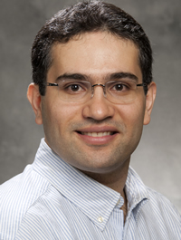

Workshop Scope
Creating search and recommendation algorithms that are efficient and effective has been the main objective for the industry and the academia for years. However, recent research has shown that these algorithms lead to models, trained on historical data, that might exacerbate existing biases and generate potentially negative outcomes. Defining, assessing and mitigating these biases throughout experimental pipelines is therefore a primary step for devising search and recommendation algorithms that can be responsibly deployed in real-world applications. In this workshop, we aim to collect novel contributions in this field and offer a common ground for interested researchers and practitioners.
Workshop Topics
The workshop welcomes contributions in all topics related to algorithmic bias and fairness in search and recommendation, focused (but not limited) to:
- Data Set Collection and Preparation:
- Studying the interplay between bias and imbalanced data or rare classes
- Designing methods for dealing with imbalances and inequalities in data
- Creating collection pipelines that lead to fair and less unbiased data sets
- Collecting data sets useful for the analysis of biased and unfair situations
- Designing collection protocols for data sets tailored to research on bias
- Countermeasure Design and Development:
- Formalizing and operationalizing bias and fairness concepts
- Conducting exploratory analysis that uncover novel types of bias
- Designing treatments that mitigate biases in pre-/in-/post-processing
- Devising methods for explaining bias in search and recommendation
- Studying causal and counterfactual reasoning for bias and fairness
- Evaluation Protocol and Metric Formulation:
- Performing auditing studies with respect to bias and fairness
- Conducting quantitative experimental studies on bias and unfairness
- Defining objective metrics that consider fairness and/or bias
- Formulating bias-aware protocols to evaluate existing algorithms
- Evaluating existing mitigation strategies in unexplored domains
- Comparative studies of existing evaluation protocols and strategies
- Analysing efficiency and scalability issues of debiasing methods
- Case Study Exploration:
- E-commerce platforms
- Educational environments
- Entertainment websites
- Healthcare systems
- Social media
- News platforms
- Digital libraries
- Job portals
- Dating platforms
Important Dates
- Submissions:
January 13, 2022January 20, 2022 - Notifications:
February 13, 2022February 20, 2022 - Camera-Ready: March 3, 2022
- Workshop: April 10, 2022 9:30 17:00 CET - Stavanger, Norway (with support for remote attendance)
All deadlines are 11:59pm, AoE time (Anywhere on Earth).
Submission Details
We invite authors to submit unpublished original papers, written in English. Submitted papers should not have been previously published or accepted for publication in substantially similar form in any peer-reviewed venue, such as journals, conferences, or workshops.
The authors should consult ECIR paper guidelines and Fuhr’s guide to avoid common IR evaluation mistakes, for the preparation of their papers. The authors should consult the Springer’s authors’ guidelines and use their proceedings templates, either LaTeX or Word.
Papers should be submitted as PDF files to Easychair at https://easychair.org/conferences/?conf=bias2022.
We will consider three different submission types:
- Full papers (12 pages) should be clearly placed with respect to the state of the art and state the contribution of the proposal in the domain of application, even if presenting preliminary results. In particular, research papers should describe the methodology in detail, experiments should be repeatable, and a comparison with the existing approaches in the literature should be made.
- Reproducibility papers (12 pages) should repeat prior experiments using the original source code and datasets to show how, why, and when the methods work or not (replicability papers) or should repeat prior experiments, preferably using the original source code, in new contexts (e.g., different domains and datasets, different evaluation and metrics) to further generalize and validate or not previous work (reproducibility papers).
- Short or position papers (6 pages) should introduce new point of views in the workshop topics or summarize the experience of a group in the field. Practice and experience reports should present in detail real-world scenarios in which search and recommender systems are exploited.
Submissions should not exceed the indicated number of pages, including any diagrams and references.
All submissions will go through a double-blind review process and be reviewed by at least three reviewers on the basis of relevance for the workshop, novelty/originality, significance, technical quality and correctness, quality and clarity of presentation, quality of references and reproducibility.
Submitted papers will be rejected without review in case they are not properly anonymized, do not comply with the template, or do not follow the above guidelines.
The accepted papers and the material generated during the meeting will be available on the workshop website. We plan to publish the workshop proceedings as a Springer's Communications in Computer and Information Science (CCIS) revised post-proceedings volume (approval pending), indexed on Google Scholar, DBLP and Scopus. The authors of selected papers may be invited to submit an extended version in a journal special issue.
Please be aware that at least one author per paper needs to register and attend the workshop to present the work.
We expect authors, the program committee, and the organizing committee to adhere to the ACM’s Conflict of Interest Policy and the ACM’s Code of Ethics and Professional Conduct.
Keynote

Prof. Dr. Ebrahim Bagheri
Ryerson University (Canada)
Title: Stereotypical Biases and Disparities in Information Retrieval
Abstract: Recent studies have shown that stereotypical gender biases have found their way into retrieval systems, which can have potentially harmful impact on the users' judgements when exposed to unfair and biased search results, e.g., problems caused by discrimination against minority groups. This is concerning especially given the fact that not only do a large number of search engine users heavily rely on retrieval systems on a daily basis but also due to the fact that search results often constitute a major component of important practical systems such as recommendation systems, question answering systems and intelligent assistants, to name a few. In this talk, I will show the extent to which stereotypical gender biases are prevalent in information retrieval gold standard relevance judgement datasets, which then get picked up and acted upon by deep learning-based neural rankers. The talk will also feature our recent works that attempt to de-bias traditional frequency-based retrieval methods as well as neural rankers. In addition, our work on de-biasing gold standard information retrieval datasets will be presented which lead to less biased retrieval outcomes.
Short Bio: Ebrahim Bagheri is a Professor in the Dept of Electrical, Computer and Biomedical Engineering at Ryerson University. He simultaneously holds a Canada Research Chair in Social Information Retrieval and an NSERC Industrial Research Chair in Social Media Analytics. Dr. Bagheri is the recipient of the 2019 NSERC Synergy Award for Innovation in Industry-Academia collaboration and the 2016 Professional Engineers of Ontario Young Engineer of the Year Award. Ebrahim has mentored over 50 graduate students and PDFs from diverse backgrounds, many of whom hold key positions in academia (e.g., Asst. Professors at Windsor, Ryerson and Guelph) and industry (e.g., IBM, Sunlife, RBC, Thomson Reuters).
Program
The BIAS @ ECIR 2022 workshop will take place in presence in Stavanger, Norway, with support for remote attendance, on April 10, 2022, 09:30 17:00, CET.
To participate, you must register to ECIR conference by filling in the form at https://ecir2022.org/registration/. Please also visit the official ECIR website for more information on attendance at https://ecir2022.org/attend/.
| Timing | Content |
|---|---|
| 09:30 09:35 | Welcome Message |
| 09:35 11:00 |
Paper Session I : Biases on Preference Distribution I
|
| 11:00 11:30 | Coffee Break |
| 11:30 12:45 |
Paper Session II : Biases on Preference Distribution II
|
| 12:45 14:00 | Lunch Break |
| 14:00 14:50 | Keynote Talk on Stereotypical Biases and Disparities in Information Retrieval Prof. Dr. Ebrahim Bagheri Ryerson University (Canada) [Slides - Video] |
| 14:50 15:30 |
Paper Session III: Biases on Fairness Dimensions I
|
| 15:30 16:00 | Coffee Break |
| 16:00 16:40 |
Paper Session IV: Biases on Fairness Dimensions II
|
| 16:40 17:00 | Discussion and Concluding Remarks |
Organization
Workshop Chairs
- Ludovico Boratto, University of Cagliari, Italy
- Stefano Faralli, Unitelma Sapienza University of Rome, Italy
- Mirko Marras, University of Cagliari, Italy
- Giovanni Stilo, University of L’Aquila, Italy
Program Committee
- Mehwish Alam, FIZ Karlsruhe and Karlsruhe Institute of Technology, Germany
- Marcelo Gabriel Armentano, National University of Central Buenos Aires, Argentina
- Ashwathy Ashokana, University of Nebraska Omaha, USA
- Alejandro Bellogin, Universidad Autónoma de Madrid, Spain
- Iván Cantador, Universidad Autónoma de Madrid, Spain
- Evgenia Christoforou, CYENS Centre of Excellence, Cyprus
- Giordano D'Aloisio, University of L'Aquila, Italy
- Danilo Dessì, University of Cagliari, Italy
- Francesco Fabbri, Universitat Pompeu Fabra, Spain
- Saeed Farzi, K. N. Toosi University of Technology, Iran
- Eduard Fosch-Villaronga, Leiden University, The Netherlands
- Nina Grgic-Hlaca, Max Planck Institute for Software Systems, Germany
- Alan Hanjalic, Delft University of Technology, The Netherlands
- Frank Hopfgartner, The University of Sheffield, UK
- Bill Howe, University of Washington, USA
- Bipin Indurkhya, AGH University of Science and Technology, Poland
- Toshihiro Kamishima, National Institute of Advanced Industrial Science and Technology, Japan
- Karrie Karahalios, University of Illinois, USA
- Arvind Karunakaran, McGill University, Canada
- Aonghus Lawlor, University College Dublin, Ireland
- Sandy Mayson, University of Georgia, USA
- Rishabh Mehrotra, Spotify Research, UK
- Joanna Misztal-Radeckaa, AGH University of Science and Technology, Poland
- Brent Mittelstadt, University of Oxford, UK
- Cataldo Musto, University of Bari, Italy
- Fedelucio Narducci, Politecnico di Bari, Italy
- Kalia Orphanou, Open University of Cyprus, Cyprus
- Jahna Otterbacher, Open University of Cyprus, Cyprus
- Panagiotis Papadakos, Information Systems Laboratory - FORTH-ICS, Greece
- Mykola Pechenizkiy, Eindhoven University of Technology, The Netherlands
- Emma Pierson, Stanford University, USA
- Simone Paolo Ponzetto, University of Mannheim, Germany
- Adam Poulsen, Charles Sturt University, Australia
- Erasmo Purificato, Otto-von-Guericke Universität Magdeburg, Germany
- Alessandro Raganato, University of Helsinki, Finland
- Amifa Raj, Boise State University, USA
- Elissa Redmiles, University of Maryland, USA
- Flora D. Salim, RMIT University, Australia
- Babak Salimi, University of California, USA
- Falk Scholer, RMIT University, Australia
- Manel Slokom, Delft University of Technology, The Netherlands
- Nataliya Sokolovska, Sorbonne University, France
- Damiano Spina, RMIT University, Australia
- Tom Sühr, Technische Universität Berlin, Germany
- Marko Tkalcic, University of Primorska, Slovenia
- Antonela Tommasel, National University of Central Buenos Aires, Argentina
- Joris Van Hoboken, University of Amsterdam, The Netherlands
- Eduard Fosch-Villaronga, Leiden University, The Netherlands
- Eva Zangerle, University of Innsbruck, Austria
- Markus Zanker, Free University of Bozen-Bolzano, Italy
- Dong Zhou, Tsinghua University, China
- Arkaitz Zubiaga, Queen Mary University of London, UK
Attending
The registration will be managed by the ECIR main conference organization at https://ecir2022.org/registration/.
Please also visit the official ECIR website for more information on attendance at https://ecir2022.org/attend/.
Past Editions
We also invite you to check out the two previous editions:
Contacts
For general enquiries on the workshop, please send an email to ludovico.boratto@acm.org, stefano.faralli@unitelmasapienza.it, mirko.marras@acm.org, and giovanni.stilo@univaq.it.